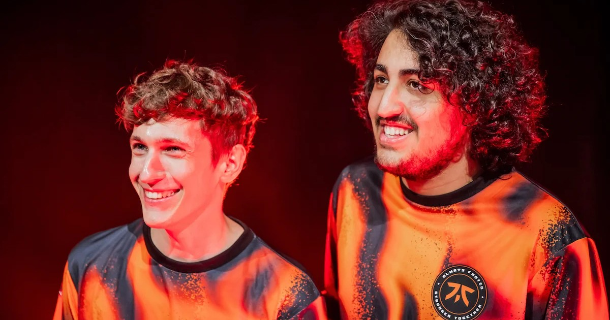

End of an era: Boaster and Alfajer leave Fnatic — Gentle Mates' VCT 2027 superteam is official
Gentle Mates confirmed the worst-kept secret in VALORANT at their 2027 Keynote: Jake 'Boaster' Howlett and Emir 'Alfajer' Beder are leaving Fnatic — and the French org is building its whole 2027 project around the duo that won two international titles together.

Disclosure: this post contains affiliate links. I earn a commission on qualifying purchases.
The worst-kept secret in VALORANT is official. Gentle Mates confirmed at their 2027 Keynote on Tuesday that Jake "Boaster" Howlett and Emir "Alfajer" Beder are leaving Fnatic to headline a rebuilt VALORANT roster for the VCT EMEA 2027 season — ending a Fnatic era that delivered two international titles and made the pair the faces of European VALORANT.
Boaster spent nearly six years with Fnatic, joining from SUMN FC in February 2021 when the org launched its VALORANT division. Alfajer arrived from Surreal Esports in May 2022, and the two of them spent four years together as the core of the roster. The announcement was made during Gentle Mates' Keynote presentation, and the org confirmed the full roster on X the same day.
The end of Fnatic's golden era
There is no overstating what this duo meant to Fnatic. Boaster became the face of the org's greatest spell, winning VCT LOCK//IN São Paulo and Masters Tokyo in 2023, plus three EMEA titles along the way. He reached the VALORANT Champions playoffs five times — more than any other player in the game's history.
Alfajer was named Masters Tokyo MVP, and the pair finished runners-up at Masters Toronto and at Champions in Paris in 2025. They were, for four years, the identity of the team: Boaster the mastermind in-game leader who always knew how to get the best out of a roster, Alfajer the mechanically gifted gunner who could flex across agents.
The split follows a 2026 season in which Fnatic missed every international event. The club announced on September 8 that Boaster had been granted permission to explore his options before his contract expired, and the writing was on the wall from there.
Boaster did not dress it up when he spoke to Sheep Esports after the announcement. "For sure. Fnatic is where I built a lot of my history. It was difficult, but I felt like it was the right time to try a different project. I'd been there for ages and I wanted to wear a different color jersey."
He once said his ambition was "to be the greatest leader of all time in VALORANT." The next chapter of that chase starts in Paris.
The new Gentle Mates roster
Gentle Mates did not just sign two stars — they built a whole project around them. The confirmed 2027 lineup is Boaster as in-game leader, Alfajer, Uğur "Ruxic" Güç from NAVI, 16-year-old Romanian duelist Denis-Stefan "kozzy" Aionitoaei, and Martin "MAGNUM" Penkov. Former Sentinels head coach Adam "kaplan" Kaplan takes charge, with Casper "Desmo" Rasmussen as his assistant.
The pieces fit together deliberately. Ruxic was the 2025 VCT EMEA Controller of the Year and joins after NAVI missed out on the 2027 partner slots. MAGNUM played alongside Boaster at Fnatic in 2021 and 2022, so this is a reunion for him too. And kozzy is the swing for the future: he posted 245 ACS in Stage 2 of VCT EMEA this year, and Gentle Mates are betting that a 16-year-old duelist with that kind of ceiling is worth building around.
There is one catch, and it is a real one. Kozzy was born on February 22, 2010, which means he does not turn 17 until that date in 2027 — so he will miss the EMEA Kickoff and Masters Seoul, which starts on February 20. Gentle Mates will have to field a sixth player for the start of the season, and they have not announced who that substitute is yet.
The roster is still pending Riot Games approval, which is standard for partner-team signings.
Gentle Mates are going bigger than VALORANT
The Keynote was not just a roster reveal. Gentle Mates also confirmed they are entering Rainbow Six Siege esports through Ubisoft's R6 Share partnership program for the 2027 season, and that they will host the first Call of Duty League Major of 2027 in Paris, scheduled for February 12–14 at the Plenitude Arena.
It is a statement of intent from an org that tore up its entire 2026 roster and coaching setup after Riot confirmed it as one of the eight VCT EMEA partner slots on a two-year deal. Gentle Mates finished runner-up at the EMEA Kickoff in 2026 and played at Masters Santiago, then fell apart in Stage 2 and finished 13th–16th after Play-In losses to Enterprise and Eintracht Frankfurt. The rebuild is total, and Boaster and Alfajer are the foundation of it.
What Fnatic do now
Fnatic are not standing still. They have already signed marteen for 2027, days after Alfajer's own four-year run with the org came to an end. But replacing Boaster is not a one-signing job — he was the in-game leader, the face of the team, and the player who had been there since the division began. Whoever takes the reins inherits a roster that missed every international event in 2026 and now has to rebuild its identity from scratch.
The 2027 VCT EMEA season just got a lot more interesting. Gentle Mates, with Boaster and Alfajer leading the way, an experienced hand in MAGNUM, and two players with something to prove in kozzy and Ruxic, have built a roster that can aim at the top of the region — and the reunion of the duo that won Tokyo together is the storyline that will follow them all year.
Sources: Gentle Mates Sign Boaster and Alfajer for VCT 2027 (Fragster) · End of an era: Boaster leaves Fnatic after six years as Gentle Mates complete VCT 2027 roster (GINX) · Gentle Mates announce 2027 VALORANT roster (TheSpike) · M8 Boaster: "It was the right time to try a different project" (Sheep Esports) · Boaster and Alfajer set for Gentle Mates reunion in 2027 roster (Dot Esports)
Gear up: Razer — mice, keyboards, headsets and laptops.